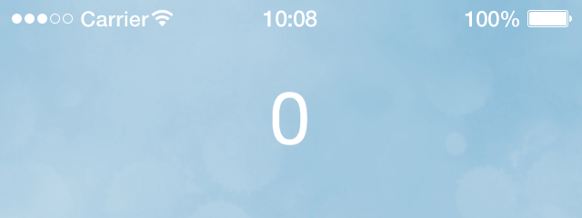

Chapter 1 — Creating a project
In this chapter we are going to create a simple
Using Solar2D
Scripting
Solar2D uses Lua scripting language. If you’ve ever programmed in any language, you will find Lua an easy transition. Introduction to Lua guide provides an overview of Lua, or you can learn Lua on YouTube. In a very short time, you will find yourself writing that great app that you’ve dreamed of creating!
If you’re completely new to programming, Lua is still easy to learn and this guide will help you along.
Text Editors
In addition to Solar2D, you will need a text editor. There are several editors available and choosing one is much like choosing a car — everybody has their own preferences and you should explore which one suits you best.
If you don’t already have a favorite text editor, the following options are recommended:
| Editor | Add-On Package | macOS | Windows |
|---|---|---|---|
| Sublime Text | Solar2D Editor | ✓ | ✓ |
| Visual Studio Code | Solar2d Autocomplete | ✓ | ✓ |
| Xcode | Xcode Editor | ✓ | |
| Vim | ✓ | ✓ | |
| ZeroBrane Studio | ✓ | ✓ | |
| Notepad++ | ✓ | ||
| TextMate | ✓ |
Creating a project

Your first project is going to be very simple, but it will demonstrate some important concepts. We are going to make a simple tapping game to keep a balloon in the air. Each time the balloon is tapped, we will “push” it a little higher.
The best way to use this guide is to follow every step — type in the code, add the images, and see your project gradually come to life. It may take a little more time, but you will gain a much better understanding.
Included with each chapter is a downloadable file which contains all of the images, audio files, and other assets related to that chapter. This chapter’s source files are available here.
Starting a Project
Creating a new project in Solar2D is easy. In just a few simple steps you’ll be ready to make your first game!
Open the Solar2D Simulator.
Click New Project from the welcome window or select New Project… from the File menu.
- For the project/application name, type
BalloonTapand ensure that the Blank template option is selected. Leave the other settings at default and click OK (Windows) or Next (Mac). This will create the basic files for your first game in the location (folder) that you specified. This is also the folder in which you’ll place all of your app files/assets, including images, program files, etc.
Including Images
For this project, you will need three image files, placed within the BalloonTap project folder created above:
| File | Size (w×h) | Usage |
|---|---|---|
background.png |
360 × 570 | The background — purely decorative so that we’re not staring at a black background. |
platform.png |
300 × 50 | The platform/floor — keeps the balloon from falling off the bottom of the screen. |
balloon.png |
112 × 112 | The balloon. |
To get going quickly, you can download and use the default images included with this chapter’s source files. Inside the archive, you’ll find the three images outlined above.
If you choose to create your own images for this project or any other project, note these basic image guidelines:
- Solar2D supports PNG and JPG format. SVG is supported through Nano SVG plugin.
- Images should not contain an embedded ICC profile.
- Avoid progressive JPG files since they will take much longer to load.
Loading the Background
The first image that we need to load is the background. Solar2D places everything on the screen from back to front in regards to layering, so the first image we load will exist behind other images that are loaded afterward. While there are ways to change the layering order of images and send them to the back or front of the display stack, we’ll keep this project simple and load them in a logical order.
Using your chosen text editor, locate and open the main.lua file within your project folder. The main.lua file is the foundational
In this main.lua file, type in the highlighted command:
----------------------------------------------------------------------------------------- -- -- main.lua -- ----------------------------------------------------------------------------------------- local background = display.newImageRect( "background.png", 360, 570 )
There are a several aspects involved with this command. Let’s break it down:
- The first word,
local, is a Lua command indicating that the next word will be a variable. A variable, just like you learned in math class, is used to store a value. In this case, that value will be an image used as your background.
Note that local is always lowercase and it’s used here to declare a variable; for example, the first time you use the variable, you should add the word local in front of it.
- The second word,
background, is the name of our variable. Any time we want to make changes to the image stored inbackground, we will use this variable name.
Remember to always use different variable names each time you use a variable. Just as it gets confusing if everyone in a classroom is named “John,” using the same variable name for all of your objects creates confusion in your program.
The
=(equal sign) is used to assign the variablebackgroundto an image.display.newImageRect()is one of the Solar2D APIs. It is used to load an image from a file so that you can use it in the app. There are a couple of ways to load an image into your app, butdisplay.newImageRect()is special in that it can resize/scale the image (this will be explained in just a moment).Inside the parentheses are the parameters which we pass to
display.newImageRect(), sometimes referred to as arguments. The first parameter is the name of the image file that we want to load, including the file extension (.png).
The specified name must match the actual file name exactly, including case-sensitive matching! For instance, if the actual file name is background.png, do not enter it as "BackGround.PNG".
The next two parameters, 360 and 570 specify the size that we want the background image to be. In this case, we’ll simply use the image’s pixel dimensions, although as noted above, display.newImageRect() allows you to resize/scale the image via these numbers.
The final step for the background is to position it at the correct location on the screen. Immediately following the line you just entered, add the two highlighted commands:
local background = display.newImageRect( "background.png", 360, 570 ) background.x = display.contentCenterX background.y = display.contentCenterY
By default, Solar2D will position the center of an object at the coordinate point of 0,0 which is located in the x and y properties, however, we can move the background image to a new location.
For this project, we’ll place the background in the center of the screen — but what if we don’t know exactly which coordinate values represent the center? Fortunately, Solar2D provides some convenient shortcuts for this. When you specify the values display.contentCenterX and display.contentCenterY, Solar2D will set the center coordinates of the screen as the background.x and background.y properties.

Let’s check the result of your code! Save your modified main.lua file and then, from within the Simulator, “relaunch” it using
If you get an error or can’t see the background, there are a few possibilities as to the cause:
- One of the commands was typed incorrectly.
- The image file isn’t in the same folder as
main.lua. - The specified filename and/or extension is incorrect or mismatched in case.
Remember that the
Loading the Platform
Time to load the platform. This is very similar to loading the background. Following the three lines of code you’ve already typed, enter the following highlighted commands:
local background = display.newImageRect( "background.png", 360, 570 ) background.x = display.contentCenterX background.y = display.contentCenterY local platform = display.newImageRect( "platform.png", 300, 50 ) platform.x = display.contentCenterX platform.y = display.contentHeight-25
As you probably noticed, there is one minor change compared to the background: instead of positioning the platform in the vertical center, we want it near the bottom of the screen. By using the command display.contentHeight, we know the height of the content area. But remember that platform.y places the center of the object at the specified location. So, because the height of this object is 50 pixels, we subtract 25 pixels from the value, ensuring that the entire platform can be seen on screen.

Save your main.lua file and relaunch the Simulator to see the platform graphic.
Loading the Balloon
To load the balloon, we’ll follow the same process. Below the previous commands, type these lines:
local balloon = display.newImageRect( "balloon.png", 112, 112 ) balloon.x = display.contentCenterX balloon.y = display.contentCenterY
In addition, to give the balloon a slightly transparent appearance, we’ll reduce the object’s opacity (alpha) slightly. On the next line, set the balloon’s alpha property to 80% (0.8):
local balloon = display.newImageRect( "balloon.png", 112, 112 ) balloon.x = display.contentCenterX balloon.y = display.contentCenterY balloon.alpha = 0.8
Save your main.lua file and relaunch the Simulator. There should now be a balloon in the center of the screen.
Adding Physics
Time to get into physics! Box2D is the included physics engine for your use in building apps and games. While using physics is not required to make a game, it makes it much easier to handle many game situations.
Including physics is very easy. Below the previous lines, add these commands:
local physics = require( "physics" ) physics.start()
Let’s explain these two lines in a little more detail:
The command
local physics = require( "physics" )physicsfor later reference. This gives you the ability to call other commands within the physics library using thephysicsnamespace variable, as you’ll see in a moment.physics.start()does exactly what you might guess — it starts the physics engine.
If you save and relaunch you won’t see any difference in your physics.addBody:
local physics = require( "physics" ) physics.start() physics.addBody( platform, "static" )
This tells the physics engine to add a physical “body” to the image that is stored in platform. In addition, the second parameter tells Solar2D to treat it as a static physical object. What does this mean? Basically, static physical objects are not affected by gravity or other physical forces, so anytime you have an object which shouldn’t move, set its type to "static".
Now add a physical body to the balloon:
local physics = require( "physics" )
physics.start()
physics.addBody( platform, "static" )
physics.addBody( balloon, "dynamic", { radius=50, bounce=0.3 } )
In contrast to the platform, the balloon is a dynamic physical object. This means that it’s affected by gravity, that it will respond physically to collisions with other physical objects, etc. In this case, the second parameter ("dynamic") is actually optional because the default body type is already dynamic, but we include it here to help with the learning process.
The final part of this physics.addBody command is used to adjust the balloon’s body properties — in this case we’ll give it a round shape and adjust its bounce/restitution value. Parameters must be placed in curly brackets ({}) (referred to as a table in the Lua programming language).
Because the balloon is a round object, we assign it a
radiusproperty with a value of50. This value basically matches the size of our balloon image, but you may need to adjust it slightly if you created your own balloon image.The
bouncevalue can be anynon-negative decimal or integer value. A value of0means that the balloon has no bounce, while a value of1will make it bounce back with 100% of its collision energy. A value of0.3, as seen above, will make it bounce back with 30% of its energy.
A
bouncevalue greater than1will make an object bounce back with more than 100% of its collision energy. Be careful if you set values above1since the object may quickly gain momentum beyond what is typical or expected.Even if you change the balloon’s
bounceproperty to0, it will still bounce off theplatformobject because, by default, objects have a bounce value of0.2. To completely remove bouncing in this game, set both the balloon and the platform tobounce=0.
Save your main.lua file and relaunch the Simulator. As a fun experiment, you can try adjusting the bounce value and relaunch the project to see the effect.
Functions
At this point, we have a balloon that drops onto a platform and bounces slightly. That’s not very fun, so let’s make this into a game! For our balloon tap game to work, we need to be able to push the balloon up a little each time it’s tapped.
To perform this kind of feature, programming languages use what are called functions. Functions are short (usually) sections of code that only run when we tell them to, like when the player taps the balloon.
Let’s create our first function:
local function pushBalloon() end
Functions are essential for both app and game development, so let’s examine the basic structure:
As before, we use the keyword
localto declare the function.The keyword
functiontells Solar2D that this is a function and that its set of commands will be called by the namepushBalloon.The ending parentheses (
()) are required. In later chapters we will put something inside these parentheses, but for now you can leave this as shown.As mentioned above, functions are
self-contained sections (blocks) of code which run only when we tell them to. Thus, whenever you create a function, you must close it with the keywordend. This tells Lua that the function is finished.
Excellent, we now have a function! However, it’s currently an empty function so it won’t actually do anything if we run it. Let’s fix that by adding the following line of code inside the function, between where we declare the function (its opening line) and the closing end keyword:
local function pushBalloon()
balloon:applyLinearImpulse( 0, -0.75, balloon.x, balloon.y )
end
It’s considered good programming practice to indent at least one tab or
balloon:applyLinearImpulse is a really cool command. When applied to a dynamic physical object like the balloon, it applies a “push” to the object in any direction. The parameters that we pass tell the physics engine how much force to apply (both horizontally and vertically) and also where on the object’s body to apply the force.
The first two parameters, 0 and -0.75, indicate the amount of directional force. The first number is the horizontal, or x direction, and the second number is the vertical, or y direction. Since we only want to push the balloon upwards 0 as the first parameter. For the second parameter, with a value of -0.75, we tell the physics engine to push the balloon up a little bit. The value of this number determines the amount of force that is applied: the bigger the number, the higher the force.

As shown in the diagram at right, positive x values in Solar2D extend to the right, while positive y values extend downward (not upward as in the Cartesian coordinate system). This is why we use a negative value (-0.75) to push the balloon upward.
The third and fourth parameters, balloon.x and balloon.y, tell the physics engine where to apply the force, relative to the balloon itself. If you apply the force at a location which is not the center of the balloon, it may cause the balloon to move in an unexpected direction or spin around. For this game, we will keep the force focused on the center of the balloon.
That’s it! We could, if needed, add additional commands inside the pushBalloon() function, but for this simple game, we only need to push the balloon upward with a small amount of force.
Events
Events are what create interactivity and, in many ways, Solar2D is an
Adding an event listener is easy — do so now, following the function:
local function pushBalloon()
balloon:applyLinearImpulse( 0, -0.75, balloon.x, balloon.y )
end
balloon:addEventListener( "tap", pushBalloon )
Let’s inspect the structure of this new command:
First, we must tell Solar2D which object is involved in the event listener. For this game, we want to detect an event related directly to the
balloonobject.Immediately following this, add a colon (
:), thenaddEventListener. In Lua, this is called an object method. Essentially,addEventListener, following the colon, tells Solar2D that we want to add an event listener toballoon, specified before the colon.Inside the parentheses are two parameters which complete the command. The first parameter is the event type which Solar2D will listen for, in this case
"tap". The second parameter is the function which should be run (called) when the event occurs, in this case thepushBalloon()function which we wrote in the previous section. Essentially, we’re telling Solar2D to run thepushBalloon()function every time the user taps the balloon.
That is everything — you have a functional game now! If you save your main.lua file and relaunch the Simulator, it should be ready to go. Try your best to continue tapping/clicking the balloon and preventing it from touching the platform!
Here is the complete program, just in case you missed something:
-----------------------------------------------------------------------------------------
--
-- main.lua
--
-----------------------------------------------------------------------------------------
local background = display.newImageRect( "background.png", 360, 570 )
background.x = display.contentCenterX
background.y = display.contentCenterY
local platform = display.newImageRect( "platform.png", 300, 50 )
platform.x = display.contentCenterX
platform.y = display.contentHeight-25
local balloon = display.newImageRect( "balloon.png", 112, 112 )
balloon.x = display.contentCenterX
balloon.y = display.contentCenterY
balloon.alpha = 0.8
local physics = require( "physics" )
physics.start()
physics.addBody( platform, "static" )
physics.addBody( balloon, "dynamic", { radius=50, bounce=0.3 } )
local function pushBalloon()
balloon:applyLinearImpulse( 0, -0.75, balloon.x, balloon.y )
end
balloon:addEventListener( "tap", pushBalloon )

Extra Credit
Congratulations, you have created a basic game in just 30 lines of code! But there is something missing, isn’t there? Wouldn’t it be nice if the game kept track of how many times the balloon was tapped? Fortunately that’s easy to add!
First, let’s create a local Lua variable to keep track of the tap count. You can add this at the very top of your existing code. In this case, we’ll use it to store an integer instead of associating it with an image. Since the player should begin the game with no score, we’ll initially set its value to 0, but this can change later.
local tapCount = 0 local background = display.newImageRect( "background.png", 360, 570 ) background.x = display.contentCenterX background.y = display.contentCenterY
Next, let’s create a visual object to display the number of taps on the balloon. Remember the rules of layering discussed earlier in this chapter? New objects will be placed in front of other objects which were loaded previously, so this object should be loaded after you load the background (otherwise it will be placed behind the background and you won’t see it).
After the three lines which load/position the background, add the following highlighted command:
local tapCount = 0 local background = display.newImageRect( "background.png", 360, 570 ) background.x = display.contentCenterX background.y = display.contentCenterY local tapText = display.newText( tapCount, display.contentCenterX, 20, native.systemFont, 40 )
Let’s inspect this command in more detail:
The command begins with
local tapTexttapText.display.newText()is another API, but instead of loading an image as we did earlier, this command creates a text object. Because we are assigning the variabletapTextto this object, we’ll be able to make changes to the text during our game, such as changing the printed number to match how many times the balloon was tapped.Inside the parentheses are the parameters which we pass to
display.newText(). The first parameter is the initial printed value for the text, but notice that instead of setting a direct string value like"0", we actually assign the variable which we declared earlier (tapCount). In Solar2D, it’s perfectly valid to specify a variable as a parameter of an API, as long as it’s a valid variable and the API accepts the variable’s type as that parameter.
The second two parameters, display.contentCenterX and 20, are used to position this text object on the screen. You’ll notice that we use the same shortcut of display.contentCenterX to position the object in the horizontal center of the screen, and 20 to set its vertical y position near the top of the screen.
The fourth parameter for this API is the font in which to render the text. Solar2D supports custom fonts across all platforms, but for this game we’ll use the default system font by specifying native.systemFont.
The final parameter (40) is the intended size of the rendered text.

Let’s check the result of this new code. Save your modified main.lua file and relaunch the Simulator. If all went well, the text object should now be showing, positioned near the top of the screen.
Continuing with our program — by default, text created with display.newText() will be white. Fortunately, it’s easy to change this. Directly following the line you just added, type the highlighted command:
local tapText = display.newText( tapCount, display.contentCenterX, 20, native.systemFont, 40 ) tapText:setFillColor( 0, 0, 0 )

Simply put, this setFillColor() command modifies the fill color of the object tapText. The setFillColor() command accepts up to four numeric parameters in the range of 0 to 10 (alpha defaults to 1 and it can be omitted in this case).
Let’s move on! The new text object looks nice, but it doesn’t actually do anything. To make it update when the player taps the balloon, we’ll need to modify our pushBalloon() function. Inside this function, following the balloon:applyLinearImpulse() command, insert the two highlighted lines:
local function pushBalloon()
balloon:applyLinearImpulse( 0, -0.75, balloon.x, balloon.y )
tapCount = tapCount + 1
tapText.text = tapCount
end
Let’s examine these lines individually:
The
tapCount = tapCount + 1tapCountvariable by 1 each time the balloon is tapped.The second new command,
tapText.text = tapCounttextproperty of ourtapTextobject. This allows us to quickly change text without having to create a new object each time.
Look carefully — to update the on-screen text, we update a property of the text object, not the object itself. In this case, we modify the text property of tapText by writing tapText.text, =tapCount variable on the line directly before, then update the text object with that same variable value, the visual display will always mirror the internal tapCount value.
That’s it! If you save your main.lua file and relaunch the Simulator, your game is essentially finished — now, each time you tap the balloon, the counter at the top of the screen will increase by 1, effectively keeping score.
The complete BalloonTap program is available for download here. If your project isn’t working as expected, please download this source code and compare it with what you’ve created.
Chapter Concepts
We’ve covered many concepts in this chapter. It may seem a bit overwhelming, but be patient, look at your code, and read through the sections again if necessary. If you need help, Discord and the forums are a friendly venue to communicate with other developers.
Here’s a quick overview of what you learned in this chapter:
| Command/Property | Description |
|---|---|
| display.newImageRect() | Loads and displays an image on the screen. |
| object.x | Sets the horizontal x position of an object. |
| object.y | Sets the vertical y position of an object. |
| display.contentCenterX | Shortcut for the center of the content area along the x axis. |
| display.contentCenterY | Shortcut for the center of the content area along the y axis. |
| object.alpha | Sets the alpha level of an object (opacity/transparency). |
| require() | Loads a given module or library, for example "physics". |
| physics.start() | Starts the physics engine. |
| physics.addBody() | Adds a physical body to an object. |
| object:applyLinearImpulse() | Applies a simulated impulse force to a physical object. |
| object:addEventListener() | Adds an event listener to an object, for example "tap". |
| display.newText() | Creates a text object on the screen. |
| object:setFillColor() | Sets the fill color for text and vector objects. |